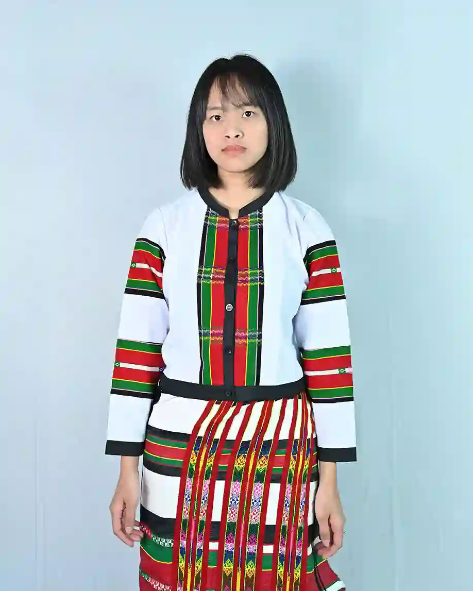

Puan and PuanChei paired with Kawrchei
Puan is among the popular traditional dresses for women in Mizoram. Puan is a drape-around skirt with shades of white, black, and red. The black shades are made of synthetic fur. It is beautifully hand-woven and carefully designed for special occasions. Puan Chei is worn while performing traditional dance forms and during weddings. It is a two-piece cloth comprising a long skirt paired with a ‘Kawrchei. The ‘Kawrchei’ is a charming blouse made of unique cotton, handmade by hand. They come in a chequered design and are bright in color. However, due to modernization, these blouses and dresses are made in factories using high-quality fabrics.